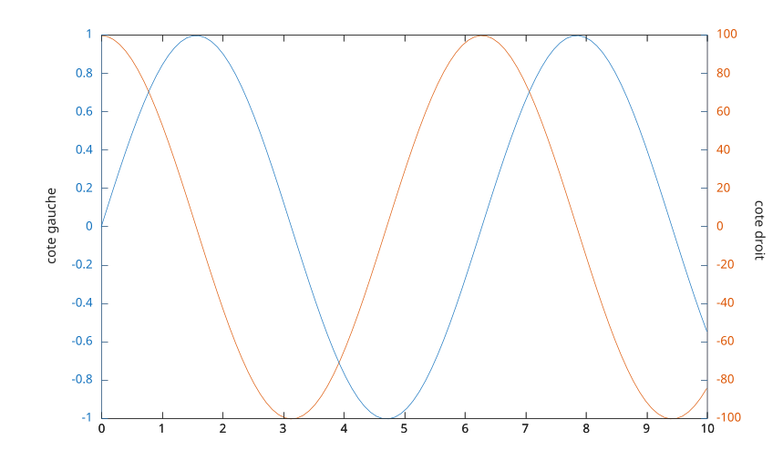

yyaxis left
yyaxis right
yyaxis(ax, 'left')
yyaxis(ax, 'right')
| Paramètre | Description |
|---|---|
| 'left' | Active le cote gauche. Les nouveaux traces sont ajoutes a l'axe y de gauche. |
| 'right' | Active le cote droit. Les nouveaux traces sont ajoutes a l'axe y de droite. |
| ax | Axe cible : axes. |
yyaxis cree un graphique avec deux axes y et selectionne le cote actif. Si l'axe courant n'a pas encore deux axes y, un second est ajoute ; s'il n'y a pas d'axe courant, il est cree.
Les deux cotes partagent le meme axe x mais chacun possede ses propres limites, couleur, echelle, direction, graduations, etiquette et enfants. Les proprietes dont le nom commence par Y (comme YLim, YColor ou YLabel) s'appliquent uniquement au cote actif. Interrogez YAxisLocation pour savoir quel cote est actif.
Par defaut, la regle de gauche utilise la premiere couleur du ColorOrder de l'axe et la regle de droite la deuxieme couleur.
Les deux regles sont aussi disponibles comme objets via la propriete YAxis de l'axe : YAxis(1) est la regle de gauche et YAxis(2) la regle de droite, quel que soit le cote actif.
cla reset supprime le second axe y et revient a un seul axe y.
f = figure();
x = linspace(0, 10);
yyaxis left
plot(x, sin(x))
ylabel('cote gauche')
yyaxis right
plot(x, 100 * cos(x))
ylabel('cote droit')
| Version | Description |
|---|---|
| 2.0.0 | initial version |